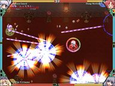

- Welcome to Touhou Wiki!
- Please register to edit. For assistance, check in with our Discord server or IRC channel.
Touhou Rekkaden
rift in a friendship game | |
|---|---|
|
 | |
| Developer | |
| Publisher |
LION HEART |
| Released |
2005 |
| Genre |
action Game |
| Gameplay |
Single-player story mode, 1-4p (human or cpu) versus mode |
| Platforms | |
| Requirements |
Pentium 500MHz, DirectX 9, VRAM 32M, DirectSound, 128MB RAM |
Touhou Rekkaden ~ rift in a friendship game (東方烈華伝 ～ rift in a friendship game, lit. "Touhou Blazing Flower Tale") is fanmade Touhou Project game that's a top down action game supporting up to four players in overhead battle, developed by LION HEART. It stars pre-Phantasmagoria of Flower View characters, where Hong Meiling is the protagonist of the game, while her fan-made future-self Lie Meiling is the antagonist.
Gameplay[edit]
Two to four players fight against each other with an overhead point of view. Each player has four different basic attacks as well as a run mode, a dodge, and three spell card attacks. (Each spell card attack is strong, but requires a spell card to use. Each player starts with one, with a max of two.) When an opponent is hit by another opponent or when an obstacle is destroyed, items are dropped - coins (which slightly increase attack energy) and sometimes minor health-up items. Extra spell cards are occasionally dropped onto the field as well, usually well into the round. Attacking and dashing use up attack energy, but it can be regained by simply not shooting/dashing or by picking up coins. The last person standing wins, although defeated players can still shoot (with massively reduced power) at anyone still in the game.
Story[edit]
Story mode focuses on Hong Meiling. Once she finished cleaning the library of the Scarlet Devil Mansion, she asked permission of Patchouli Knowledge if she can borrow a book. Meanwhile, Yukari Yakumo appears and takes Meiling onto a training course, fighting various residences of Gensokyo.